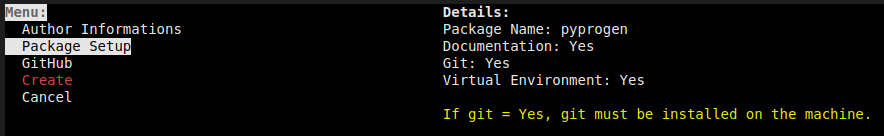

Quick Start#
Prerequisites#
Before using pyprogen, ensure that the following dependencies are installed on your system:
Python 3.6 or higher
pip
git (required for Git-related features)
To automatically link a project to a GitHub repository, you must have a GitHub account and an existing repository on GitHub. Futhermore, your computer must have access to the repository, and your credentials must be linked with your devise.
Note
The following sections provide step-by-step instructions for manually setting up documentation, Git, or a GitHub repository:
Installation#
To install pyprogen, use the following command:
pip install git+https://github.com/Artezaru/pyprogen.git
Once installed, you can create a new Python project in the current directory using the command line interface (CLI):
pyprogen
This command launches an interactive CLI where you can configure your project. Use the arrow keys to navigate and Enter to select options.
CLI Interface Overview#
Package Setup#

Here, you configure the project settings, including:
Package name (mandatory)
Enable Sphinx documentation (optional)
Initialize a Git repository (optional)
Create a virtual environment (optional)
Note
Documentation, Git, and virtual environment preferences are saved for future use. Only the package name needs to be entered each time you create a new project.
Warning
If Git is enabled, git must be installed on your system.
GitHub Integration#

In this section, you can enter a GitHub repository URL to link your project. Use the “Auto-generate” option to automatically fill the repository URL based on the author’s name and package name.
Warning
The repository must already exist on GitHub before creating the project.
Your computer must have access to the repository, and your credentials must be stored in the Git configuration.
“Git” must be Yes in the Package Setup section to enable this feature.
Creating the Project#
Once all fields are filled, click the “Create” button to generate the project in the current directory. The project structure is detailed in the Project Structure section.
Note
If the button appears in red, it indicates missing required fields, preventing the project from being created.
To cancel the setup at any time, press the Exit button.